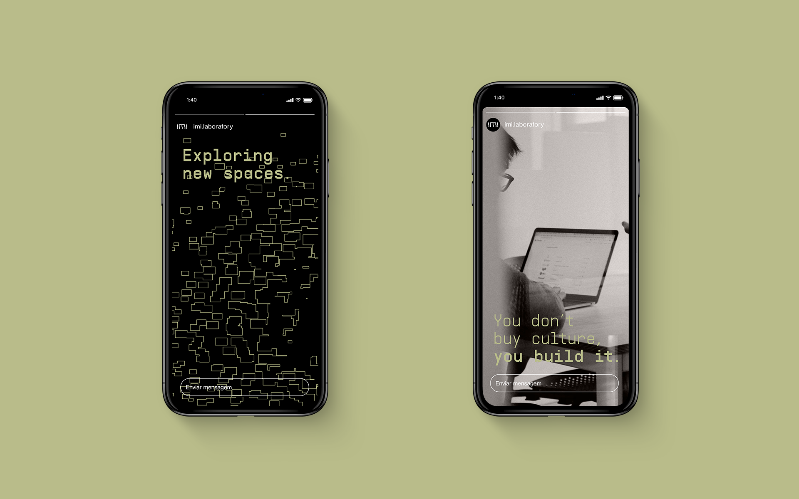
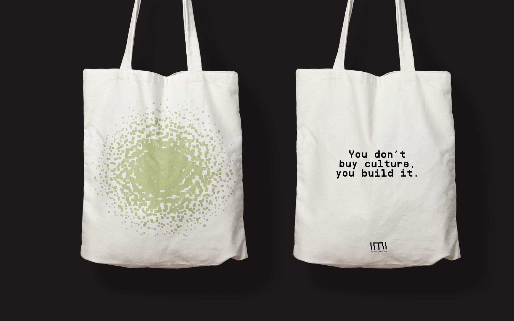
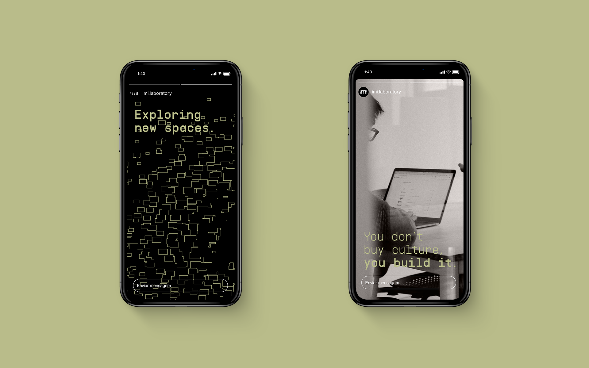
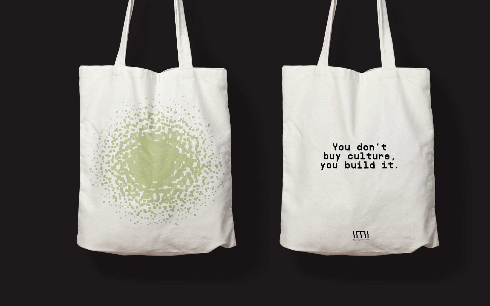

IMI
Cena Brasil foi um projeto desenvolvido pela TIDAL Brasil que selecionou curadores de cada estado brasileiro para desenvolver as playlists Nova Cena Brasil, indicando as revelações de cada lugar e Essencial Cena Brasil, para os clássicos que todo mundo deveria conhecer.
Para os visuais das letras, os materiais mudaram de acordo com a playlist. Para a Essencial de cada estados, por contar com clássicos e artistas já consagrados, utilizamos materiais mais duros e fortes. No caso da Nova Cena, que trata de artistas novos e em ascensão, a escolha foi por materiais mais flexíveis e suaves.
Made at REBU
Cliente: IMI
Visual communication
Year: 2020
Art direction: Pedro Mattos e Camilla Mattos
Graphic design and code: Bruno Faiotto
Fonts: Supply Mono, Neue Haas Grotesk


 


